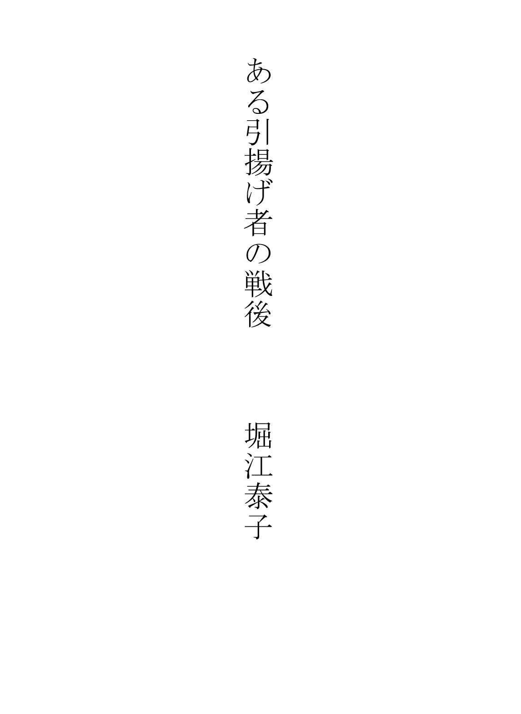
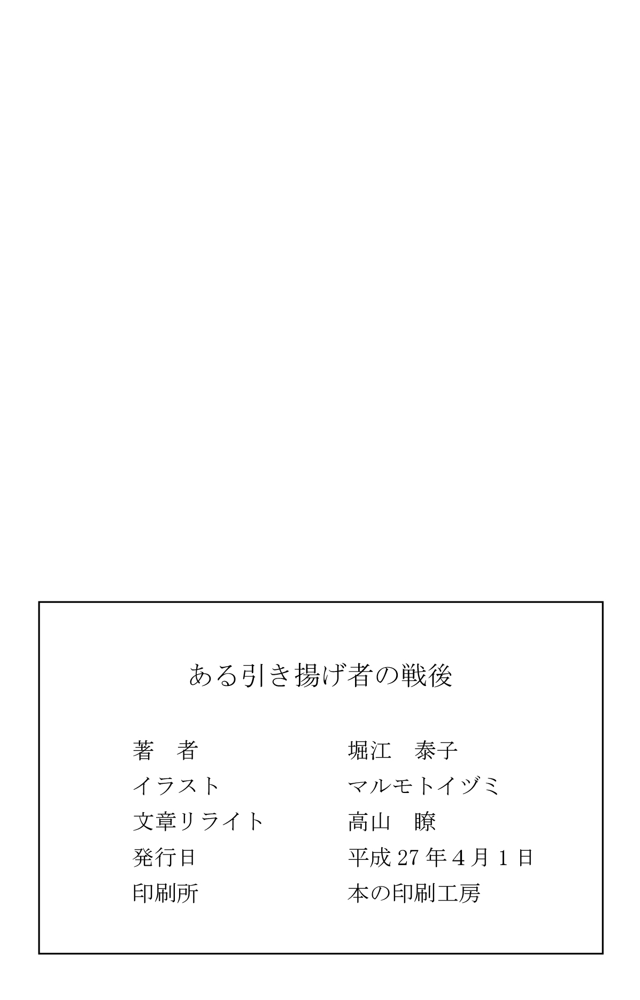

| ある引揚者の戦後 | |
| 堀江 泰子 | |
| (2015) | |

在満邦人 を見捨てた関東軍
満州 で生まれ育った私は、終戦前から引揚げ後までひどい目にあいました。しかし、そんな私たちの戦争体験を否定するような書籍 を何冊か見かけます。
ある作家は、「ソ連兵が満州に侵入してきたのは終戦 間際 のものが多いし、また関東軍がソ連兵と戦った」と、軍の都合のいいように書いています。しかし、私の実際の体験では、ソ連軍が満州で日本人を殺したのは、終戦間際の八月ではなく、七月です。あるいは六月かもしれません。なぜなら、軍は六月に在満の男子を一斉に招集 して、守るべき国民を身代 りにし、自分たちは日本に逃げたのですから。私たちは日本が負けたことさえ知らず、誰も守ってくれない満州で、ソ連兵におびえながら終戦後も一年間暮らしたのです。
また、別の本では軍の高官 だった人が、「日本人も誘 ったが、ついてこなかった」と書いていますが、これもとんでもない間違いです。私たちは、ソ連軍が満州に侵入していることも知らなければ、軍人とその家族たちが満州から脱出していることも知らなかったのですから...。
元関東軍 作戦 主任 参謀 の草地 貞 吾 は、「軍は作戦を最優先 せねばならぬ。敵 には気づかれずにひそかに撤退 するのも任務 だ。居留 民 に多少の犠牲 が出るのはやむを得 ない。それが戦争だ」と言っています。慰安婦 問題 が蒸 し返される昨今 ですが、軍隊は日本人さえ守らなかったのです。ちなみに、元関東軍参謀本部の瀬島 龍 三 は勲 一等 瑞宝章 までもらっています。
満州事変
満州事変について、学校ではあまり教えていないことをお話ししておきたいと思います。
一九三一年（昭和六年）九月十八日午後十時二十分、瀋 陽 市の北方七五キロにある柳 条 湖 付近で、南満州鉄道の鉄路 の一部が爆破 される事件がありました。張学良 ら東北軍の犯行とされ、それを理由に日本軍は満州の大半を占領 したのですが、実際は関東軍によって破壊された謀略 事件 だったのです。
第一次世界大戦のあと、アジアで唯一の戦勝 国 だった日本には好景気 が続いていましたが、一九二三年に関東大震災、一九二七年に金融 恐慌 、一九三〇年には昭和 恐慌 と立て続けに荒波が押し寄せ、経済はドン底に陥 っていました。そうした中で日本は、「武力 による近隣 諸国 の支配 」という道を歩むことになりました。
軍は、天皇や政府の反対を無視 して軍事行動を起こし、満州の大半を占領しました。これが満州事変です。その後、日本は溥儀 氏を担ぎ出して皇帝とし、「満州 国 」を作ります。しかし、のちに戦況 が不利 になって関東軍が満州から逃げたとき、皇帝一家は置き去りにされました。皇帝たちは飛行機で脱出しようとしたのですが、空港で捕まり、撫 順 の収容所 に入れられました。私たちは幸い、捕まったりしませんでしたが、皇帝一族はその後もひどい目にあわされたと聞きます。
昭和三十年頃、住まいのこと
昭和三十年頃、私は高校で音楽の教師をしていました。まだ家がなく、義父の建てた教会の裏口 の四畳半（板の間）に、四人で住まわせてもらっていたのですが、大阪府堺 市に家が五軒ほど建つというので、そこの抽選に申し込むことになりました。しかし、堺市に一年住んでいることが条件となっていたので、夫と長女だけが堺に六畳一間を間借 りし、私と次女は学校が近いので、教会の裏口にそのまま住んでいました。
そんなある日、学校から帰ると、道路に私の部屋の荷物が放り出してあるではありませんか。泥棒 が入ったのかと思っていると、「私の荷物を放り出した人」がやってきて、「行くところがあるのならそこへ行け」と言うのです。それまでひと言もなく、突然の実力 行使 です。仕方なく、私は夫の六畳に一緒に住むことになりました。約一年経って五軒の家が建ったのですが、申し込み率は十倍で当たるあてはなくなりました。
「私の荷物を放り出した人」は、夫が亡くなった時に夫の父親の購入した信者さんの為の広いお墓に入れてもらおうとしても、入れてくれませんでした。理由は何も言いません。仕方がないので高いお金を出して土地を買ってお墓を建てたのですが、追いかけるように、「私たち家族四人の教会の籍 を抜いた」と一方的に知らせてきました。やはり理由は何も言いません。教会に来るなという意味か？ 私たちが教会を取り戻すとでも思っているのか？ この人は一体何者なのか？何を考えていたのかはわかりませんが、こうして私たちは義父の建てた会から追い出されたのです。
憲兵隊 とは「軍隊内部の警察 機能 を担 う兵科 」とあります。これだけではその役割はよく分かりませんが、戦争がひどくなるにつれてその本性 を現しました。憲兵は一般の人も監視 していて、例えば「戦争はいやだ」とか、軍の悪口を言ったりすると引っ張っていって、ひどい目にあわせます。兄と妹が一緒に歩いているだけも、「この戦 時下 にけしからん」と嫌な目にあわせるほどです。
私たちも新婚の時、親の家を訪ねるために東京から満州に行った時、嫌な目にあいました。ホテルに泊まっていると、憲兵がノックもせずに入ってきて、「どこへ何しに行くのか」としつこく取り調べるのです。まるでスパイのように嗅 ぎまわり、捕まえたらなぶり殺してもいいという権限 を持っていたらしいのです。
私たちはその程度で済みましたが、私の二番目の姉の夫はもっと過酷 な人生を強 いられました。戦前ドイツに医学の勉強のため留学していた義兄は、満州に帰国してから奉天 の医科大学で医師をしていたのですが、言葉が分かるので当時ドイツから逃れてきた人たちとの交流が頻繁 にありました。それを憲兵にあやしいとにらまれ、昭和十四年の「ノモンハン事件」の時はソ連軍が侵入する現地に送られ、昭和二十年の戦争末期には「全滅 した」とされる硫黄 島 にやられたのです。幸い、義兄は二度も奇跡 の生還 を果たしましたが、憲兵によって間接的 に殺された無念の人も多数いらっしゃることでしょう。
義母のこと
堀江の母、私にとっては姑 が入院した時のことです。何の病気か聞かされていなかったのですが、三週間ほどしてお見舞いに来た方が、「顔色が黄色いので、他の先生に診 てもらったら」と勧めます。そこで他の先生に診てもらったら、黄疸 が出ていることわかり、早速手術することになりました。義母が亡くなったのはそのわずか二日後。まだ四十代半ばでした。義母が亡くなる前、子供たちは皆集まってベッドのそばで賛美歌 を歌いました。
義母はお嬢 様 育ちながらも、夫の事業の倒産で六人の子供を抱え、小さなメリヤス工場をつくって頑張っていた矢先でした。義母の実家は家の周囲を一周するのに一時間かかるほどの広さでした。庭には山あり池あり、自費で立てた教会ありで、屋敷の中を南海 本線 が通る駅があったほどです。そのため、通勤客は朝晩、庭の中を通って通勤していました。
義母には「父」と呼ぶ歳の離れた兄がいたのですが、この人は古鏡の有名な収集家で、梅仙 鏡堂 という雅号 を付けていました。二階の広い部屋には各国の鏡が展示してありました。資産があるので自ら働くことはなく、趣味 三昧 の毎日だったとか...。でも、戦後アメリカの進駐軍 が入ってきて、資産家 の財産が没収されてからは、小さな家に住んでいました。
義母はクリスチャンということで、義父と同じクリスチャンの家に嫁 いだと聞いています。嫁ぎ先の堀江家は当時、織物業 では奈良県一でした。義父は町の一等地に百人も入れるくらいの大きな教会を建て、その奥には牧師用に二階建ての家を建てて信者さんのための広いお墓も教会に寄付したといいます。当時でも広い土地と、建築費、付属品などは相当な金額だったはずです。
家 系譜
堀江の家には立派な家系譜があります。有名なデパートで作ったもので、清和 天皇から始まり、一人一人詳しい系歴 や堀江家の祖 、名字の由来なども書かれています。
また、家系譜には、「明治天皇が畝 火 陵 に御幸 になり、その帰りに普通なら皇室関係のところにしかお休みにならないのに、奈良県一と言われた堀江家にお小 休 みになった」というようなことも詳しく書いてあります。
四年ほど前、親戚の人から、「自分の家が本家で、明治天皇がお小休みになった」と地元の新聞や何かで宣伝している人がいることを聞きました。昔のことを知る人が少なくなったので、うそを言ってもばれないと思っているのでしょうか。私は「家に詳しい家系譜があるから大丈夫だ」と返事をしておきました。この人は若い時、堀江家で小僧をしていて、苦学をして偉くなったらしいのですが、こういうことがあるから、私はいろいろ書き残しておきたいと思ったのです。
長女とピアノ
満州から引揚げてきた時、家も家財道具もすべて失っていたのですが、ピアノだけは戻ってきました。そこで早速、四歳の長女にピアノを教えると、覚えが早いのです。そんな時、子供を教えるのが上手な先生がいると聞き、習わせることにしました。その先生の教え方は独特 で、私も勉強になりました。小学生になると、長女はコンクールで入賞するほどになり、もっと偉い先生のレッスンを受けるため、東京に通うことにしました。
新幹線などない時代です。天王寺 駅から夜汽車に乗り、翌朝東京につくと、先生の家に直行し、すぐレッスンの時間になります。この先生は「日本で一番偉い」と言われていたのですが、問題がありました。よく弾けないと楽譜でたたいたりして暴力をふるうのです。子供なのにあまりにひどいので、先生を変えました。しかし、親子で東京まで往復し、先生への謝礼 を払うと、一か月分の生活費が消えてしまいます。つらい時期でした。
東京芸大に付属高校ができたのはその頃です。ピアノ科は定員十名ほどでしたが、幸いトップで入学できました。しかし、喜んでいるのも束 の間 、学校には寮 がないため下宿探しには苦労しました。ピアノを置いてもらえる家などめったにありません。あっても近所からうるさいと苦情が出て追い出されます。いろいろ苦労はありましたが、大学と大学院卒業時には安宅 賞 をいただきました。賞金は大学四年分の授業料に相当する金額でした。
さあ、これで終わり、と思っていると、長女は突然、「ドイツに行きたい」と言いだします。国費 留学という方法は当時もあったのですが、国会議員などのコネがないと無理なので、私費で行くことになりました。当時はまだ一ドルが三六〇円の時代。十万円送ってもとても足りません。おまけに次女も東京の音大に行っていたので、こちらも下宿代を入れて五万円は送らなくてはならず、もちろん自分たちの生活費も要 ります。
こうして経済的に大きな負担をかけた長女ですが、留学先のドイツでは先生の助手をしたり、コンサートに出たりして、だんだん生活もできるようになりました。二年半経った頃、もうしばらくドイツにいたいと言ってきたのですが、すっかり安心していた私は、それを認めるつもりでした。ところが、夫がどうしても帰って来いというので、長女は何もかも捨てて帰国することになったのです。
羽田まで迎えに行ったその日、飛行機が遅れて夜帰れなくなり、次女の下宿に泊まる破目 になりました。冬休みのため帰郷 している次女の下宿先に着き、長女が父親に電話をしました。短い会話だったと記憶しています。そして、これが父と娘の最後の会話となってしまったのです。
翌朝七時頃、次女から「お父さんの具合が悪いので、救急車で病院に行く」との電話があり、私たちは急いで家を出ました。夫は大きな病院に運ばれたが、そこで断られ、次の病院に運んでいるうちに亡くなったといいます。
それまでにも、私の身内が三人も、何らかのミスで命を落としています。父は薬の副作用で、母は看護師に何かされて、義母は病気を診きれない医師のために手遅れになって、それぞれ亡くなりました。そして、夫も「たらい回し」によって無念の最後となったのです。長女は、何もかも捨てて帰ってきたのに、父とは生きて会うことが出来ませんでした。
ザルツブルク音楽祭とカラヤン
今では誰でも日本にいながら、世界の一流演奏家の音楽を楽しむことができますが、戦後の復興期には、クラシック音楽を聞けるのはほんの一部の人たちだけでした。
戦後まもなく日本にやってきたクラシック音楽では、イタリアのオペラが強く印象に残っています。入場料は三千円くらい。今とさほど変わらない金額に見えますが、当時のサラリーマンの一か月分の給料と同じくらいです。途方もない入場料で、誰もがコンサート会場に足を運べるというわけにはいきません。
あのすばらしい声を堪能できるようになったのは、テレビが放映されるようになった昭和三十年頃からですが、当時のテレビはまだ一般庶民 に手の届く値段ではありません。初めはモノクロの画像で、そのテレビがどこの家庭にも入るようになった頃、カラーテレビが登場しました。その頃、ようやくどこの家庭でも本格的に音楽を楽しめるようになったのです。
「ザルツブルグ音楽祭」という名は、たいていの方が一度くらいは耳にしたことがあるでしょう。オーストリアのザルツブルグという街で毎年、夏に行われる音楽祭で、一流の指揮者、演奏家がここに集まります。
日本からのツアーもあったので、私も何回か行ったことがあります。初めての時は、バスが小高い山並みをどこまで走っても建物らしきものが見えず、こんなところに本当にオペラ場があるのかと思ったほどです。その山並みを抜けると、小高い山の反対側に劇場が見えてきました。よく見ると小高い山は、塩を採掘 した跡を劇場にしたもので、大中小の立派な劇場でした。昔、海だったところに塩が堆積 し、そこがだんだん隆起 して塩の山ができたものです。他日、その塩を掘り出すところに行ってみましたが、採掘跡の両側の壁をちょっと削ってなめてみると、確かに塩の味がしました。不思議な光景です。
さて、そのザルツブルグ音楽祭ですが、ある年にカラヤンの指揮で「ドイツレクイエム」という曲が予定されていました。演奏は八月と九月にあり、私は九月一日の分を申し込んだのですが、その年、カラヤンは病気で、八月は他の人が代役で指揮をとったのです。
すっかりあきらめていましたところ、突然、九月の一日と二日にカラヤンが指揮をするという発表がありました。当日、確かにカラヤンはステージに登場しました。しかし、両腕を人に抱えられ、足をぶらぶらさせながら指揮台に向かう姿は、とても往年のカラヤンとは思えません。ほとんどの観客が心配を強めたのではないでしょうか。
ところが不思議なことに、指揮 台 に立って指揮 棒 を握 ると、カラヤンはそれまでとは別人のようにシャンとなり、場内はピーンと張りつめた空気に変わったのです。それから一時間半、立ちづめで指揮棒を振るその姿は、とても先ほど抱えられて現れた人とは思えませんでした。さすがプロ中のプロだと感動した、忘れられない情景です。
しかし、これが指揮者としての最後で、翌年六月にカラヤンは亡くなりました。
かつて、生の音楽を聞きたくても、早くから予約をしておかないと切符が取れない時代がありました。今では日本でもオペラがよく上演されるようになり、さまざまな素晴らしいクラシック音楽をだれでも聞くことができます。しかし、皮肉なことに、最近はクラシックがあまり聞かれなくなったようです。残念なことだと思っていると、オペラの本場イタリアで有名なオペラ劇場が閉鎖されるとか...。本場でさえお客さんが減っているのかとびっくりしました。
クィーンエリザベス号に乗る
戦後四十年くらい経った頃、ふとクィーンエリザベス号の新聞広告が目に留まりました。クィーンエリザベス号といえば、当時世界一の豪華 客船 で、私たちとは無縁 の夢の世界です。さして興味もなく眺めていると、五日間の短い日程なら乗れない価格ではないことに気付きました。そうなると居ても立ってもいられません。さっそく次女に話し、サウサンプトンからの五日間のコースを二人で申込みました。
実際に見るクィーンエリザベス号は想像をはるかに超えた大きさで、中に入るとそこはもう立派な町です。一日中鑑賞 できる広い劇場 や、カルチャーセンター、スポーツジムなどがそろっており、昼間は二時間ほど上陸して見物 やお買い物もできます。泊まった部屋はバストイレ付の十畳くらいの広さで、両側にベッドがあり、部屋付きのボーイさんに何でもやってもらえるなど、一流ホテルそのものでした。また、食事も豪華 で、朝から品数 は多いし、量も多くてとても食べきれません。翌朝の分から断ってバイキングで食べることにし、昼食と夕食も少なくしてもらいました。
引揚げの時の船と比べるのはおかしいのですが、リバティ船の船底 の鉄板一枚のところで敷 くものもなく数日過ごし、食事が質、量ともに粗末だったことを考えると、何という贅沢 三昧 でしょう。でも、今思えばこの豪華客船の旅は、引揚げ時の苦労とシーソーの釣 り合 いが取れていたのかもしれません。
フィギュアスケート
近年、フィギュアスケートの人気が日本で沸騰 していますが、戦前はほとんどの人がそんなスポーツがあることさえ知らなかったのではないでしょうか。
満州に住んでいた頃、冬になると校庭でスケートをしました。体育の授業だったのですが、前夜に先生方が校庭に水をまいて「スケート場」を作ってくださったようです。低学年は下手なので、滑 るというよりも遊びが中心。上手になるにつれスピードスケートをするようになりましたが、まだフィギュアスケートは知りませんでした。
始めてフィギュアを見たのは、稲田悦子さんというオリンピック選手が奉天 を訪れたときのことです。ヨーロッパへ行く途中、奉天に寄って演技を披露してくださったのですが、その時はバックと８の字を描くだけでした。今のように目の回るような高速スピンや四回転ジャンプなどを見ると、まるで曲芸 みたいで、その目覚ましい進歩には驚かされます。また、演技だけでなく、衣装も何と華やかになったことでしょう。
稲田さんの演技を見てから、バックの練習や８の字を描く練習をしてみましたが、私たちにはまだ難しすぎたようです。その頃、下駄 の歯のところに金具をつけた「下駄スケート」というものがあり、スケート靴が高かったのでそれを履 いて滑っている人もいました。今は冬が来るのが楽しみです。なぜならフィギュアが見られるから...。
馬賊 とは？
満州には「馬賊」というものがいて、日本人は皆 恐れていました。しかし、郊外 に独立 守備隊 という軍隊がいて日本人を守っていたので、私たちは馬賊をあまり目にすることはありませんでした。
馬賊とは何者でしょうか？ ブリタニカ国際大百科事典を見ると、「中国、清末から第二次世界大戦にかけ、華北、東北（満州）に割拠 していた騎馬 集団 。村落の略奪 ，強盗を業 とした匪賊 としばしば混同され、事実それに近い行為をする馬賊もなかにはあったが...」とあります。私たちが恐れていた馬賊は、混同されていたほうの「馬賊」だったようで、いわばギャング集団です。
当時、私たちの女学校にも馬賊の統領 のお父さんがいる、と聞いていたので、気になってよく耳にしていた人の名前をネットで調べてみました。中国人の馬賊で有名だった人は「張学良 、張作霖 （学良の父）、張景 恵 、馬 占山 、謝 文 東 」などで、本来の馬賊です。
また、日本人の馬賊もいたらしいというので、それも調べてみると確かに三人います。小日向 白 朗 （尚旭東）、伊藤順之助（張宗援）、斉藤菊次郎（催健軍）。皆、中国名で活躍 していたようですが、なぜ日本人なのに馬賊になったのか、謎に包まれています。
軍と一緒に引揚げた人
満州からの引揚げ時に、軍と一緒にひそかに帰って楽をした人もいる。そのことを思い知らされたのは同窓会の席でのことです。戦後、だいぶ落ち着いた頃、小学校時代の友達とも連絡がついたのでクラス会を開きました。共学の学校だったので、男女が混じって懐かしい思い出話に花を咲 かせるはずでした。
ところが、出席者の中に昭和二十年の終戦前に軍と一緒に帰ってきた人がいて、当時の体験を得意げに話し始めるのです。その人は乳飲み子を連れていたが、赤十字軍 の船で帰ってきたので、ミルクも薬も十分にあり、楽だったといいます。自分たちだけがよい目をして帰れたことを知らなかったのでしょうか。悪びれもせず、あまりにうれしそうに話すので、私たちはただ黙って聞いているだけでした。
昭和二十年七月頃、軍の飛行機で帰った偉い人もいると聞きました。船で帰った人も日本の客船です。一方、私たちはその一年後の七月、アメリカの貨物船「リバティ船」とかいう船での帰国です。この船は船底が鉄板で、すぐ下の水音がぽちゃぽちゃと聞こえる上に、敷くものもありません。こんな船で数日を過ごしたなんて、客船で帰った人には想像もつかなかったでしょう。
また汽車での移動も、終戦前に帰った人たちは客車でトイレも水も使えたでしょうが、私たちは屋根のない貨物列車です。トイレと水がないばかりか、途中何度も汽車が止められて、女を出せと要求されます。私たちは皆でお金を集め、そのほうの仕事をしていた女の方を探して、残ってもらうしかありませんでした。その上、荷物検査と称して金目の品物を取り上げられてしまったのです。
私たちは食べ物でも苦労を通り越して、ひもじい思いをしました。船に乗り移って初めて食事が出たのですが、朝は手のひらに乾パン一杯、昼はなし、夜はおかゆだけです。数日過ごせる食事ではありません。舞鶴 に着くまでに、船上で亡くなった方の水葬 をよく見かけました。それだけに、日本の島が見えたときは「ああ、やっと日本へ帰れた」と感無量 でした。同じ貨物船に乗っても、良い食事をもらった人もいたと聞かされたのは、上陸して後のことです。
中国人のやさしさ
「中国人はやさしかった」と言うと、意外に思う方が多いと思います。しかし、軍に見捨てられた私たちは、当時満州に住む多くの中国人に助けられたのです。
最近、慰安婦 問題 などでは韓国の方の怒りが再燃 しています。当時、日本軍は韓国だけでなく中国に対しても、戦勝 国 のような気持ちで、やってはならないことを平気でやっていました。でも、日本が負けるとわかると何をしたか？ おそらく中国の方々はご存知ないでしょう。そして、満州で暮らしていた日本人ですら知っている人はわずかです。
それは日本が戦争に負けるほんの三か月前、あのいばっていた関東軍が、日本が負けることを知って、家族も財産もすべてを持って、ひそかに一般の人たちのふりをして日本に帰ったのです。そして、関東軍の身代わりに六月に一斉 招集 されたのが、満州で暮らしていた兵隊の経験のない二十歳〜四十歳くらいの男子です。彼らは武器もなく、手ぶらでソ連との国境の激戦地 に送られたのです。軍隊が逃げたことを知ったソ連軍はもう敵なしです。終戦にならないうちにこの人たちをシベリアへ連れていき、私たちの住む満州の町にも戦車がどっと入ってくることになりました。
この時、ソ連との国境付近には、当局が「楽園 」と称する日本の東北地方の人たちの開拓団 が入植していましたが、男子を取られた何百人かの若い女子供は、逃げるところをソ連の戦車で生きたまま押し潰 されたり、機関 銃 で撃ち殺されたりして、二百人以上が殺されています。一方、召集された男子は武器もなく、ソ連軍にシベリアへ連れ去られ、極寒 のシベリアで重労働をさせられました。日本に帰してもらえたのは早い人でも三年ほど。その間、どれほどの男性が亡くなったことでしょう。
当時はラジオもなく、そうした情報が何もない中で突然、ソ連兵が戦車で町へ入ってきました。私たちは怖くて逃げ惑 うしかなく、ソ連兵は日本人の家財を奪 い、若い女の人を連れ去るなどやりたい放題です。その時すでに、日本軍は日本へ逃げ帰っていたのですが、私たちには知る由 もありません。
ソ連軍が侵入してきてから間もなく、日本は無条件 降伏 し、さらにそれから一年もの間、私たちは守ってくれる軍も政府もなく満州に残され、ソ連兵から怖 い目に合わされていました。自分の身は自分で守るしかない。そんな状況下 で、私たちをかくまうなどして助けてくれたのが、日本が占領した満州に住む中国の方たちでした。命の恩人でもあります。ちなみに、在満の日本人が帰国できるようになったのは、敵国だったアメリカのお陰 でした。日本政府のお陰ではない。そのことを知ったのは最近のことです。
終戦後、日本へ帰国できるまでの一年間、満州に取り残された日本人は働くところもなければ、商売をすることもできず、わずかに家に残っている品物を町に立って売るしかありませんでした。
そんな時、中国の人が日本人の子供を買いに来ました。ただで連れ去るのではなく、「きちんとお金を払って」です。子供を育てられなくなった人には、それぞれの事情があるでしょうが、多くの子供たちが中国人に引き取られました。戦争を仕掛 けられてたくさんの人が殺された中国の人たちが、お金を出してまで子供を育ててくださったのです。日本人にこんなことができるでしょうか？
でも、この子供たちの多くは育ててくださった親を見捨てて、日本へ生みの親探しに帰ってきました。厚労省 の世話で無事、生みの親や血を分けたきょうだいに会え、日本に住むようになった子供たちは、当初バラ色の日本を夢見 ていたかもしれません。しかし、言葉が不自由で習慣も違う子供たちは、家族とうまくいかない例も少なくないと聞きます。中には暴走族になったものもあるとか...。何が幸せか、考えさせられる問題です。
中国の人たちのやさしさ、おおらかさは、今振り返ってもつくづくそう感じます。私たちがソ連兵に襲われた時、孫 さんたちには何かと助けていただきました。また、銀行時代に父の世話になったという方には、私と子供には何の関係のないのに、家にかくまって大事にしていただきました。孫さんは若い頃日本へ留学し、いつも父を慕 って後についてこられた方で、日本へ帰るまで経済的にも私たち家族の面倒を見てくれました。
そんな懐かしい満州へ自由に行ける時代が来てからも、私は一度も彼 の地を訪れたことがありません。弟が行ってみたら、昔の面影 は何もなくなっていたと、がっかりして帰ってきたからです。
母との再会
引揚げが決まってグループを作る時、私たち家族は別々にされてしまいました。私の両親と、結婚後の私の姓 が違っていたために生 じたミスですが、気がついた時はもう間に合わなかったのです。母は道中食べるものが不足するからと言って、夏でも日持ちがするものをせっせと作りました。私のほうは当然一緒に食べられるものと思っていたので、娘と二人分の菓子パンを荷物にならない程度に買っただけです。当日、奉天 駅に行くと親たちとは別々で、大勢の人たちが列を作り、必死で探し回っても見つかりません。汽車に乗ってからも混雑 していて探すどころではなく、とうとう船に乗り、日本についてからも家族が出会うことはありませんでした。両親は佐世保 に行き、私の住まいは奈良 だったので、そのまま音信不通の状態が続いたのです。
両親と消息 を絶ってから四、五年経 ったある日、母がひょっこり訪ねてきました。久しぶりの再会はどんなにうれしかったことでしょう。母は帰国してからもずいぶん苦労したらしく、いろいろ話してくれました。長崎にあった大きな家が壊 されていて、住むところがなくなったこと。父が元気をなくしていたので、満州で百万 長者 と言われていた母が道路にゴザを敷 いて商売をして家族を養っていたこと。何とか落ち着いてきたので気になって出てきたことなど、話は尽きません。私のことは、家も荷物も日本にあるので何とか暮らしていると思っていたらしく、「何もかも売られ、追い出された」と聞いて、母は泣いていました。
おわりに
先に書いた「軍は在満の一般邦人を見捨てた」は、舞鶴引揚記念館の方へお送りしたところ、思いがけなくもユネスコの世界 記憶 遺産 として登録してくださるとか。二〇一四年六月に四件の中二件が日本での登録が通りました。１つの国で二件だけ、二年に一回登録できるということで、次の年の夏ごろには世界記録遺産として登録していただけるそうです。
何十年か経って、どなたかが読んでくださって、こんなことがあったのかと、次々に伝えられ、忘れないでいただきたいのです。ありがとうございました。
<注>
満州（今の中国東北部）
在満邦人 (戦前、満州に住んでいた日本人)
満人（中国東北部の少数民族。満州人、満族ともいう）
関東軍 (戦前に満州で独裁的 権限 をふるった日本陸軍部隊)
草地貞吾（元関東軍作戦主任参謀）「軍は作戦を最優先させねばならぬ。敵に気付かれず
密かに撤退するのも任務だ。居留民に多少の犠牲が出るのはやむを得ない。それが戦争だ。」
瀬島龍三（元関東軍参謀 元伊藤忠会長）「大元師の命令で何でもやった」勲一等瑞宝章受章。
＊ 右は満州より終戦前に撤退した軍人が戦後に書いた本からメモしたもの
ユネスコ 国際 連合 教育 科学 文化 機関 （ＵＮＥＳＣＯ）
ユネスコの名は「国連」「教育の」「科学の」「文化の」「機関」の英語の頭文字をつなげたもの。
国際連合の本部はニューヨークにあるが、その専門機関の一つユネスコ本部はフランスのパリにあり、加盟国は一九五か国。諸国民の教育、科学、文化の協力と交流を通じて、国際平和と人類の福祉の促進
を図 るのが目的。
世界記憶遺産は、ユネスコ（国連教育科学文化機関）の三大遺産事業（ほかには「世界遺産」「無形文化遺産」）の一つで、世界の重要な記憶遺産の保護と振興を目的に１９９２年から開始された。
文書や書物、楽譜、絵画、映画などの記録史料が対象となり、代表的なものとしては、「アンネ・フランクの日記」「ベートーベンの直筆楽譜」などがある。
